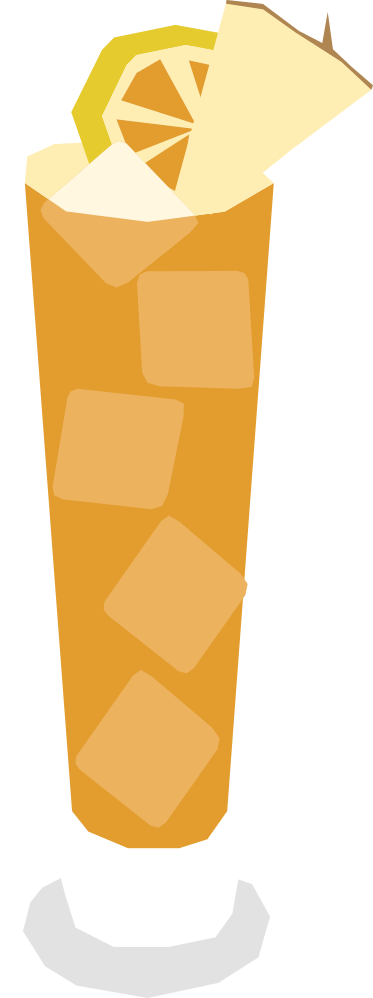

¿Ya te contaron el secreto?
Creado en los años 50-60 por Miss Emily Cooper en su pequeño "Blue Bee Bar" de Green Turtle Cay. La receta original se mantuvo en secreto durante décadas y hoy es una de las bebidas más pedidas por los turistas en todo el archipiélago.
RECETA
- 45 ml ron oscuro
- 30 ml ron de coco
- 30 ml jugo de piña
- 30 ml jugo de naranja
- 15 ml licor de albaricoque
- Hielo en cubos
- Agrega todos los ingredientes a una coctelera con hielo.
- agrega el vodka y hielo, y mezcla bien
- Agita bien y vierte en un vaso lleno de hielo.
- Decora con un gajo de naranja y/o piña
Vaso: Vaso alto o hurricane